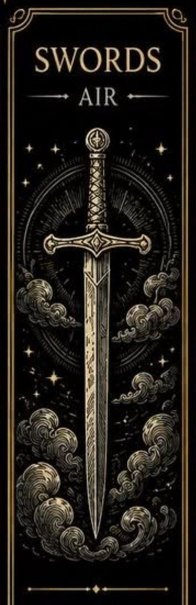
Meče sú jednou zo štyroch sád Malej arkány v tarote. Predstavujú myšlienky, komunikáciu, rozhodnutia a intelekt.
Ich energia je spojená s logikou, analýzou a schopnosťou riešiť problémy.
Meče sú spojené s elementom vzduchu. Karty tejto sady často hovoria o dôležitých rozhodnutiach, konfliktoch, výzvach a hľadaní pravdy.
Upozorňujú na význam jasného myslenia a otvorenej komunikácie.
Meč symbolizuje silu rozumu a schopnosť oddeľovať fakty od ilúzií. Môže predstavovať ochranu, pravdu, ale aj konflikty, ktoré vznikajú pri rozdielnych názoroch.
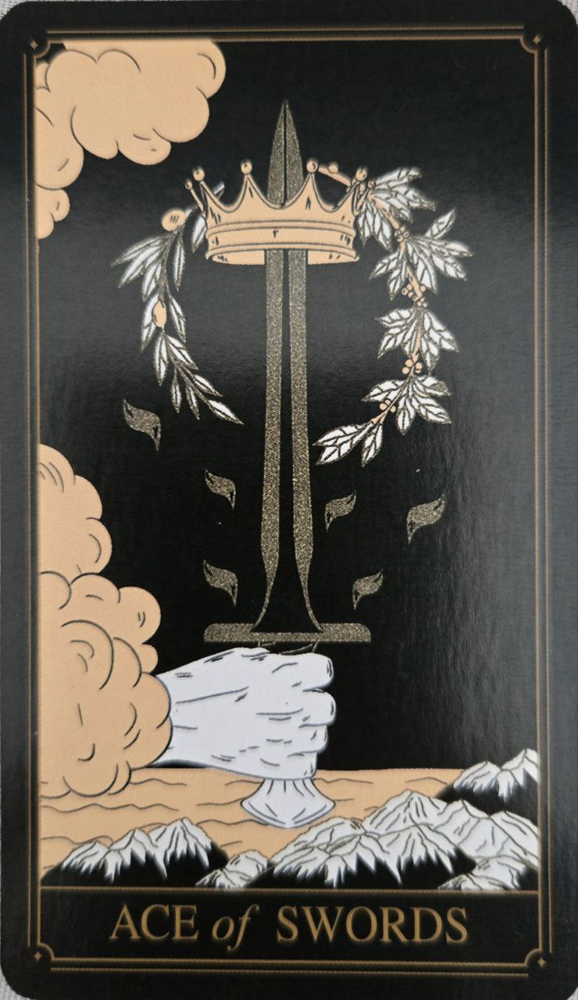
Karta jasnosti, pravdy a nových myšlienok. Predstavuje mentálny prelom, rozhodnosť a schopnosť vidieť situáciu bez ilúzií.
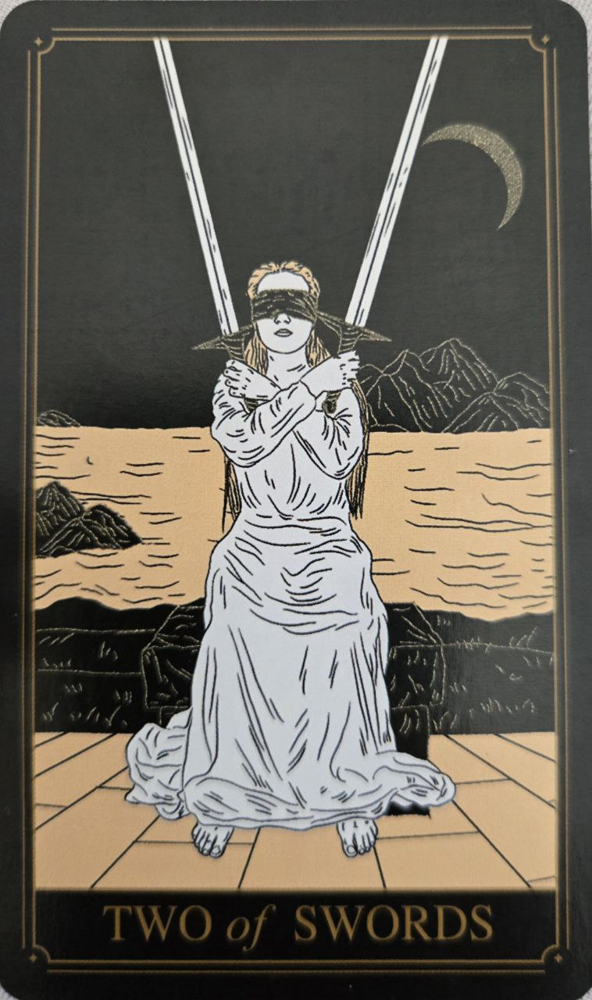
Symbol nerozhodnosti a vnútorného konfliktu. Naznačuje potrebu urobiť rozhodnutie a postaviť sa pravde.
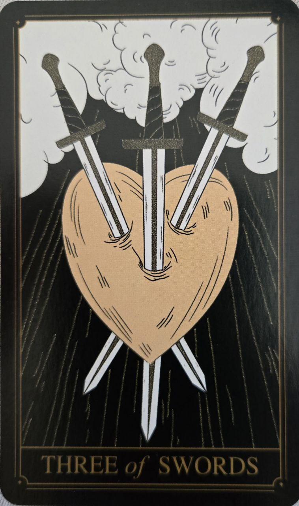
Karta bolesti, sklamania a emocionálnych zranení. Poukazuje na náročné skúsenosti, ktoré vedú k pochopeniu a rastu.
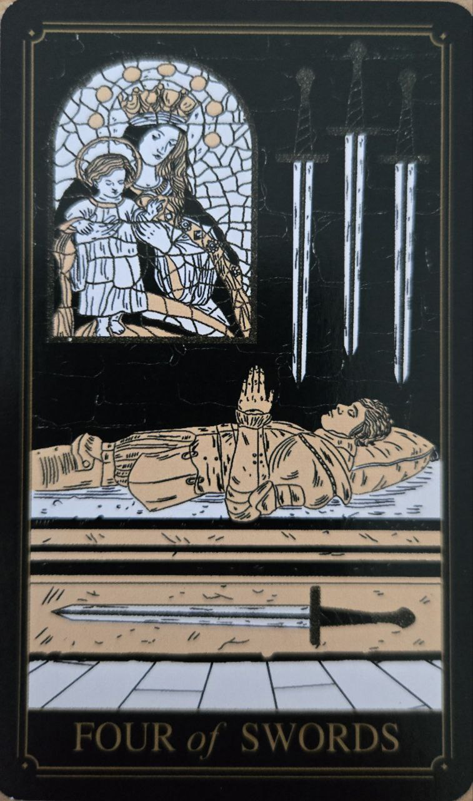
Predstavuje odpočinok, regeneráciu a čas na premýšľanie. Povzbudzuje k načerpaniu síl pred ďalšími výzvami.
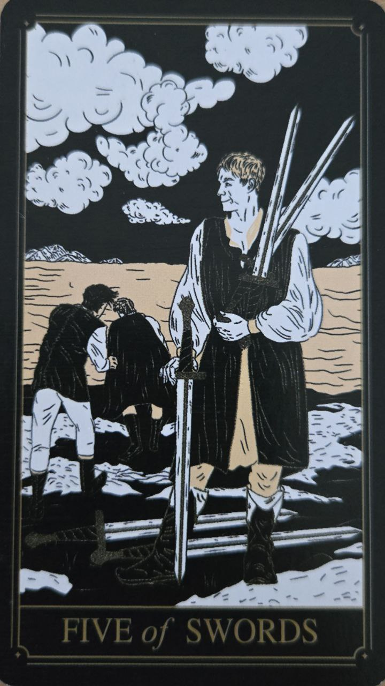
Karta konfliktov, napätia a sporov. Upozorňuje na dôsledky víťazstva za každú cenu a potrebu zvážiť svoje kroky.
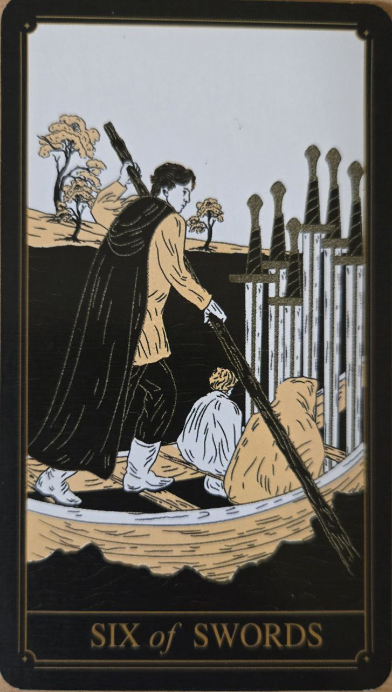
Symbol prechodu, uzdravenia a postupného posunu vpred. Naznačuje opustenie náročného obdobia a smerovanie k pokoju.
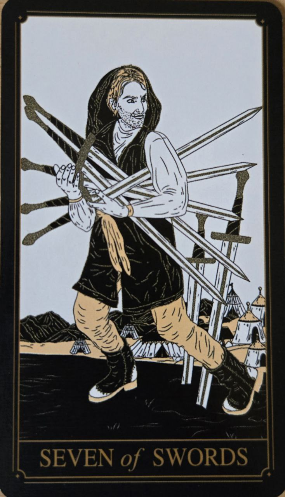
Karta stratégie, tajomstiev a opatrnosti. Môže poukazovať na potrebu konať premyslene alebo na neúplnú úprimnosť.
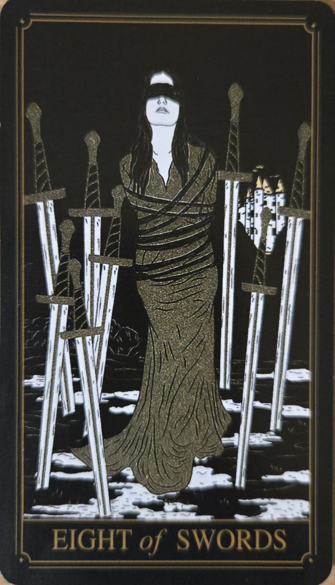
Predstavuje pocit obmedzenia a bezmocnosti. Pripomína, že mnohé prekážky môžu byť vytvorené vlastným spôsobom myslenia.
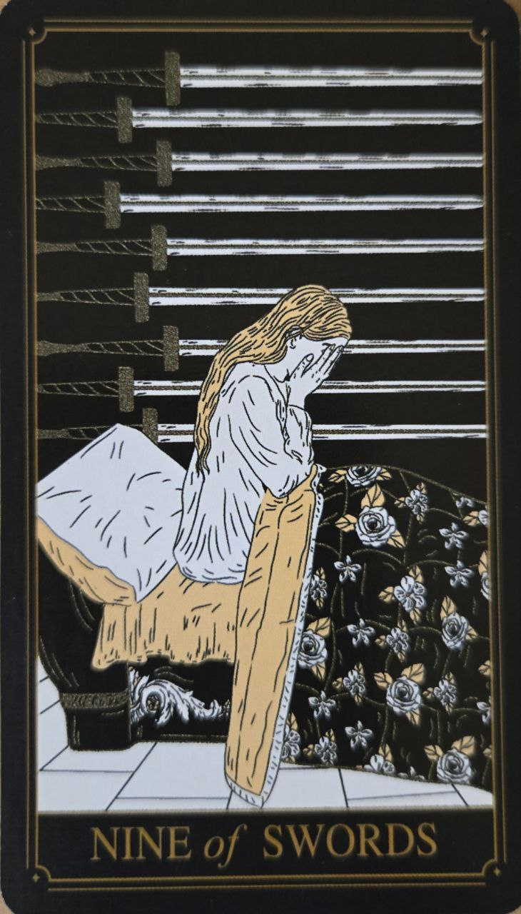
Karta obáv, stresu a vnútorného nepokoja. Naznačuje starosti, ktoré môžu byť väčšie v mysli než v skutočnosti.
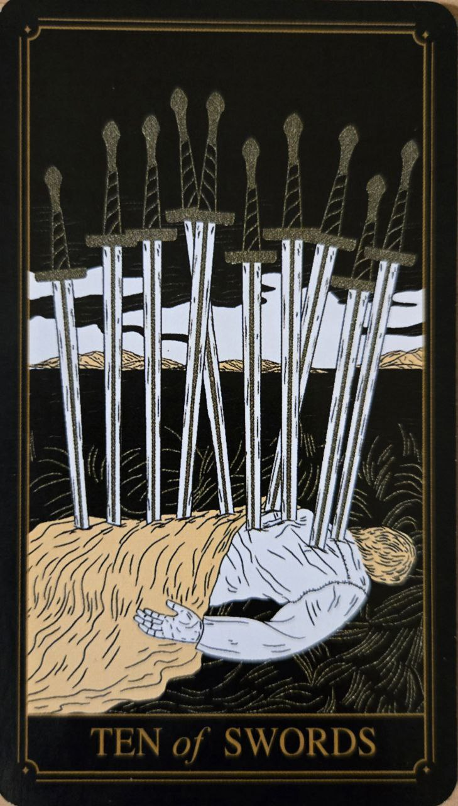
Predstavuje koniec náročného cyklu a úplné vyčerpanie. Hoci môže znamenať bolestivé ukončenie, zároveň otvára priestor pre nový začiatok.
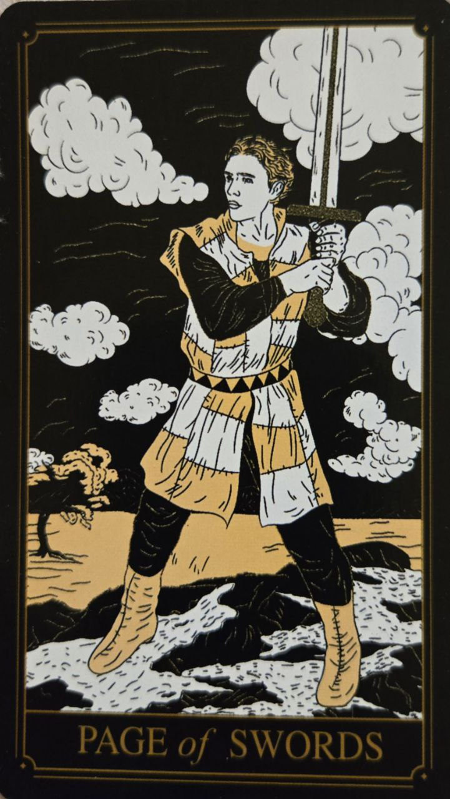
Symbol zvedavosti, učenia a bystrého myslenia. Naznačuje nové informácie, nápady alebo túžbu objavovať pravdu.
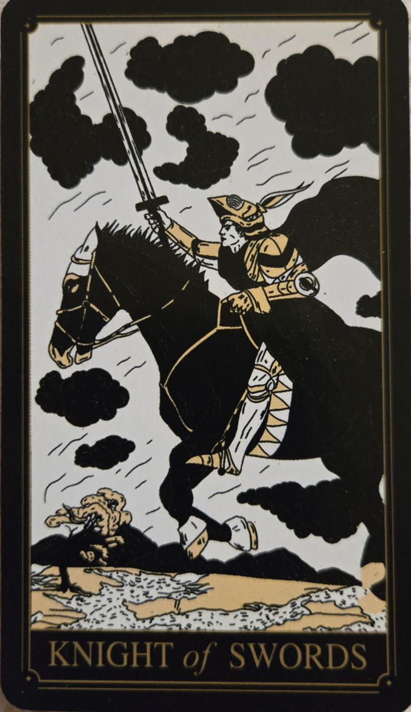
Karta odhodlania, akcie a rýchleho postupu. Predstavuje človeka, ktorý ide za svojím cieľom s veľkou energiou a presvedčením.
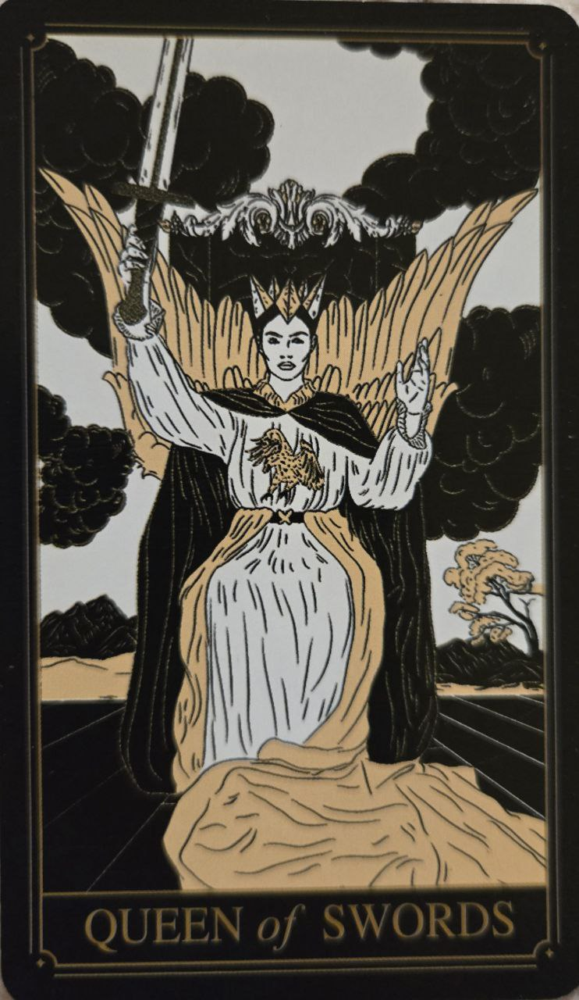
Predstavuje nezávislosť, objektivitu a múdrosť. Je symbolom jasného úsudku, úprimnosti a schopnosti vidieť podstatu vecí.
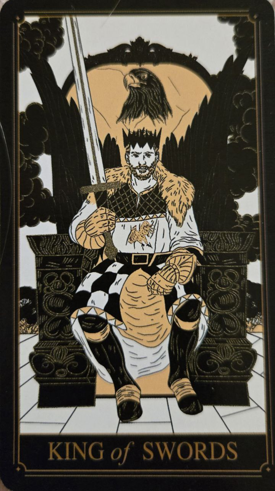
Karta autority, intelektu a spravodlivosti. Predstavuje schopnosť robiť rozumné rozhodnutia na základe logiky a skúseností.